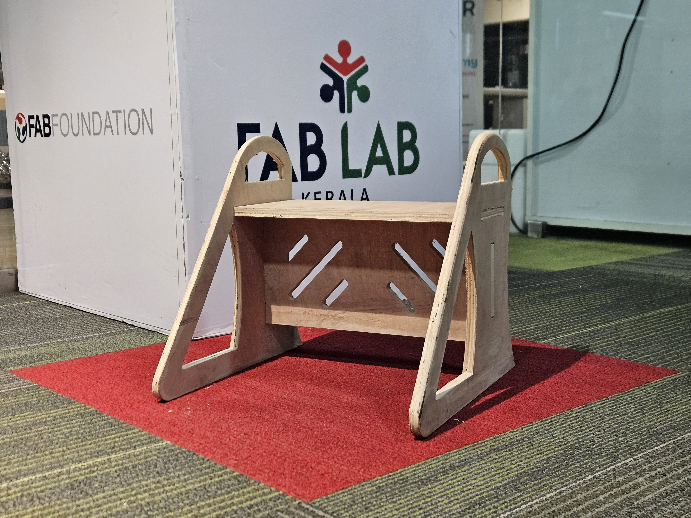
Eli Step — CNC-milled plywood step stool, designed in Fusion 360 and milled on a ShopBot at Fab Lab Kerala
This week focused on computer-controlled machining — designing a large-scale part, generating toolpaths with CAM software, setting up the CNC mill, and operating the machine to cut the final piece from sheet material.
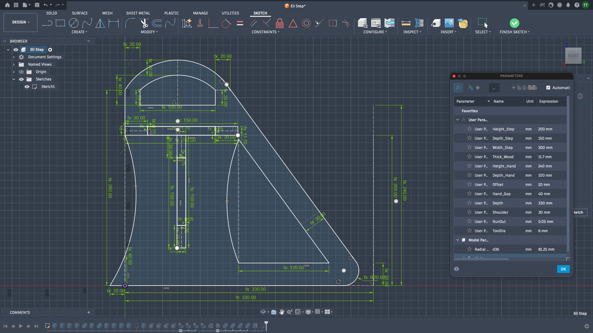
Start with a Surface
Fusion was used in hybrid mode — combining surface and solid modelling — to design the multiple components of the part within a single file, keeping all the pieces aligned and referencing the same set of parameters.
Parametric Design — The sketch was driven entirely by user parameters (e.g. Height_Step, Depth_Step, Width_Step, Thick_Wood)
rather than fixed numbers. Changing a single parameter automatically updates every dimension that depends on it,
making it easy to adjust the design for different material thickness or scale without redrawing the sketch.
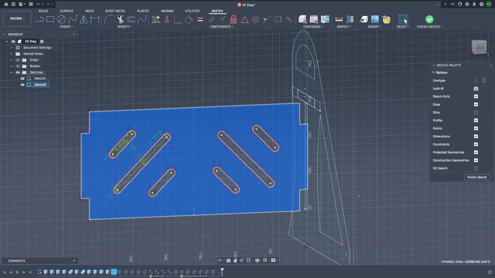
Sketch All Surfaces
Using the First Sketch as Reference — The original side surface sketch was used as a reference when creating sketches on the other planes. By projecting key points and lines from the first sketch, the new sketches stay aligned with it automatically, so the surfaces fit together correctly when the part is assembled.
Fully Constrained Sketch — Every dimension and geometric relationship in each sketch should be constrained. In Fusion 360, fully constrained geometry turns black, while under-constrained geometry stays blue/green and can shift unexpectedly. Giving each sketch proper constraints early prevents the model from breaking later when parameters are changed.
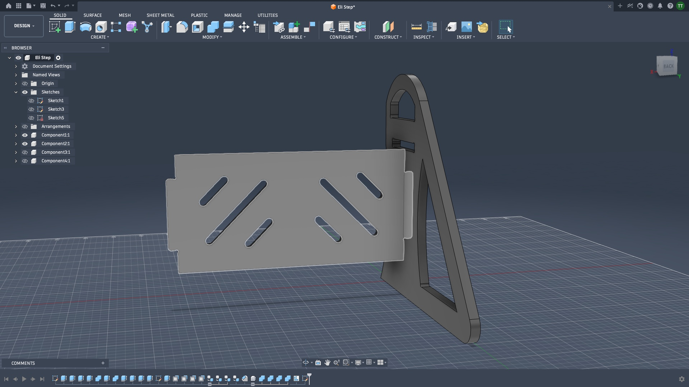
Create 3D Bodies
Once the sketches were in place, each profile was extruded to create the 3D bodies that make up the object being designed. Extruding pushes a flat sketch profile out by a defined distance to form a new solid body, cut from an existing body or join with an existing body. To create duplicate or similar bodies, either use mirror function or use extrusion with an offset.
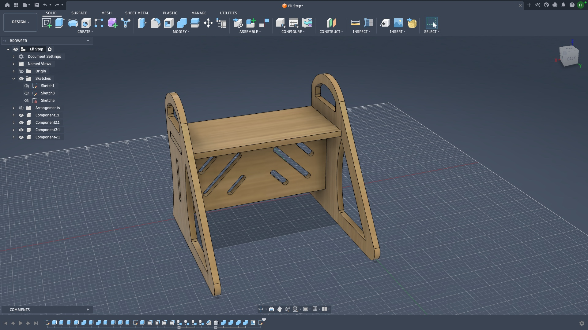
Create Components
Each body was converted into its own component so it could be positioned, hidden, and machined independently.
Right-click a body in the browser and select Create Components from Bodies to convert it.
Once converted, the appearance of each component can be changed individually — select the component and press
A to open the Appearance dialog and assign a material or colour, as shown here with the wood finish.
Add a small chamfer to sharp edges that will be handled or assembled, to ease fit and avoid splintering. For internal corners on press-fit or finger joints, add dogbones — small relief cuts at the corner — to compensate for the round profile of the milling bit, since a round tool cannot cut a perfectly sharp internal corner.
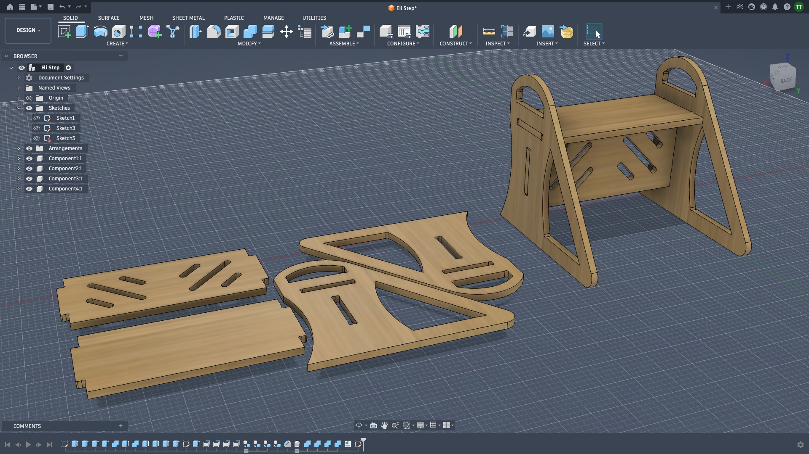
Arrange Components
Once all the components were created, they were laid out flat so the arrangement fits within the plywood piece that will be milled. Components were positioned to make efficient use of the sheet while keeping enough spacing between parts for the milling bit to cut cleanly.
Plywood sheets vary slightly in thickness across the sheet, so several width measurements were taken at different points using calipers, then averaged. The averaged value was updated in the corresponding Fusion 360 parameter so the slot widths in the design match the real material — ensuring the joints fit snugly instead of being too loose or too tight when milled.
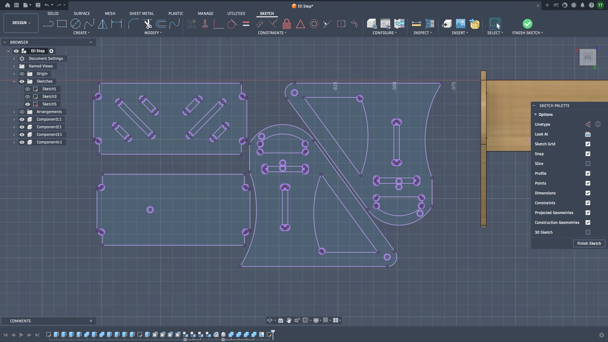
Exporting for CAM
The arranged components were projected onto a single sketch to get the final flat sketch that will be used for milling. This sketch geometry was then exported as a DXF file, the format used to bring the cut paths into CAM software.
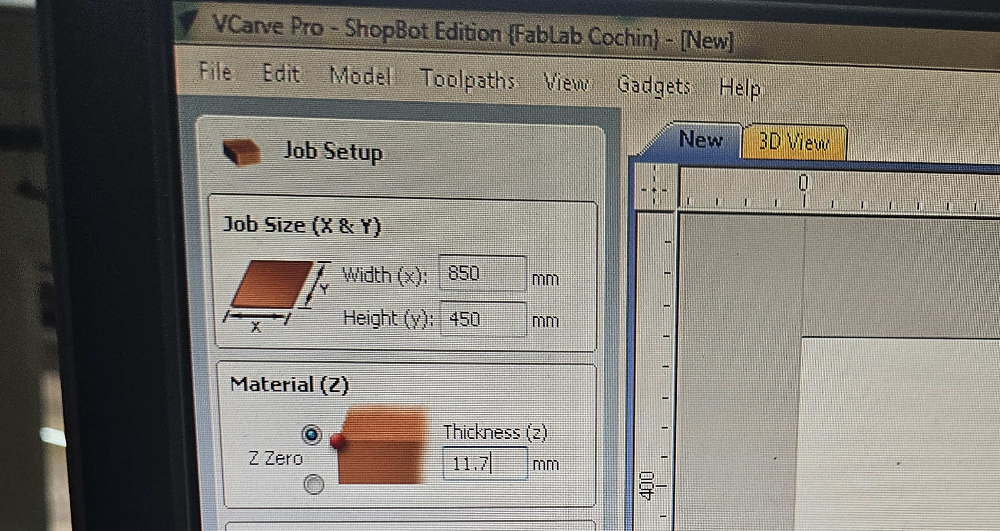
Preparing Machine for Milling
VCarve Pro – ShopBot Edition is a CAD/CAM software specifically designed for ShopBot CNC machines. This software generates the toolpaths that the machine will follow during the milling process.
In VCarve, a new file was created and the job size was set based on the dimensions of the plywood being used. The calculated material thickness also needs to be added.
File → Import Vectors was used to select the necessary DXF file. If the imported
geometry is out of bounds, the shortcut M activates the move tool, which can be used
to drag the design and place it inside the working area.
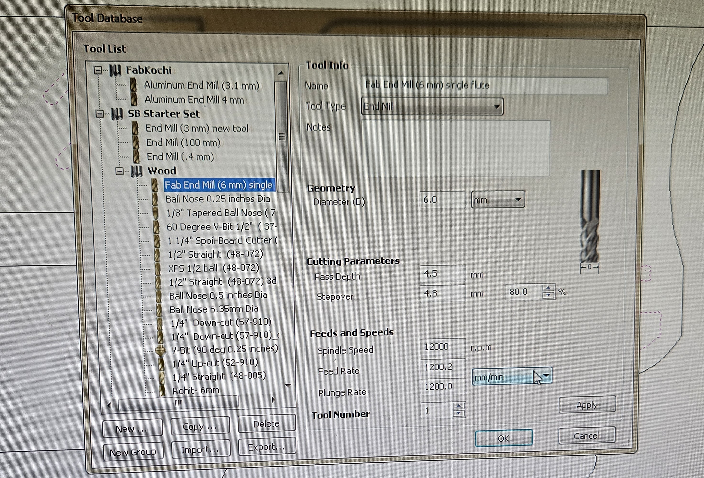
Setting up Tooling values
The tool used was a 6 mm single-flute end mill, with the feed rate set to 1200 mm/min.
The total cut depth should be set slightly deeper than the actual material thickness. This ensures the tool cuts completely through the plywood and slightly into the sacrificial layer, preventing incomplete cuts caused by small thickness variations in the material.
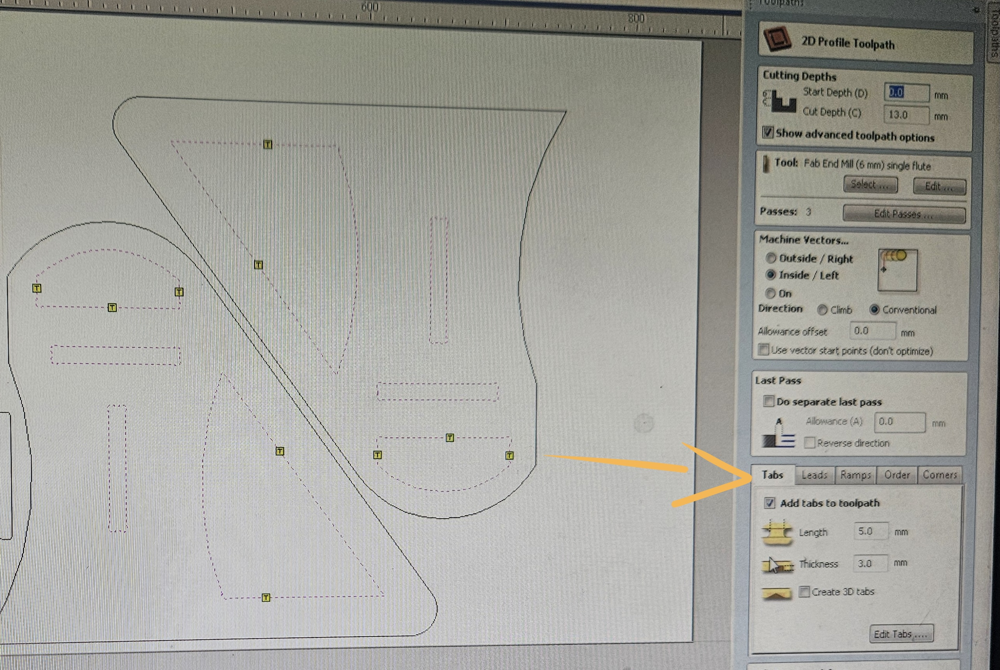
Material Handling
Tabs were added for pieces which could come loose once cut. The tabs retain a small connection that holds these pieces in place during milling, and can be easily removed afterward.
The plywood sheet was secured to the bed with nails so that it doesn't move around during the milling process. If it is difficult to predict the path of the drill bit, mark safe spots in the design and mill these points a few mm deep first — this shows exactly where it is safe to place the nails in the plywood without interfering with the toolpath.
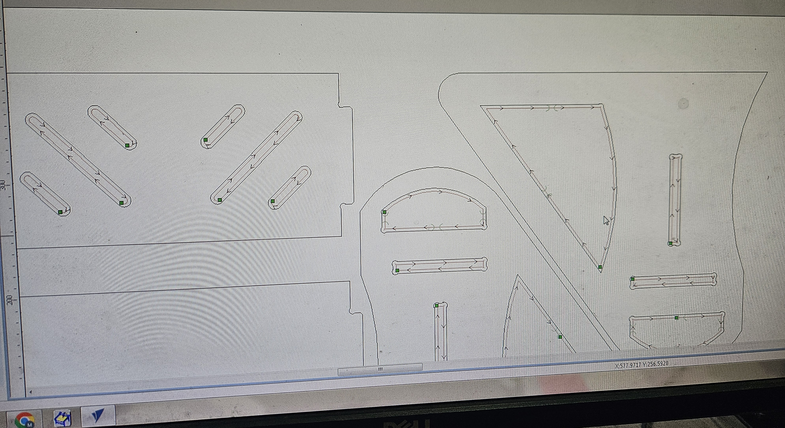
Set Tool Path
A drilling toolpath was then created in VCarve. The slot toolpath was set to Inside Cut, ensuring that the tool moves along the inner side of the vector so the slot dimensions remain accurate.
It's important to do the inside cuts before moving on to the outside cuts, so that the pieces don't move around once they are freed from the surrounding material during milling.
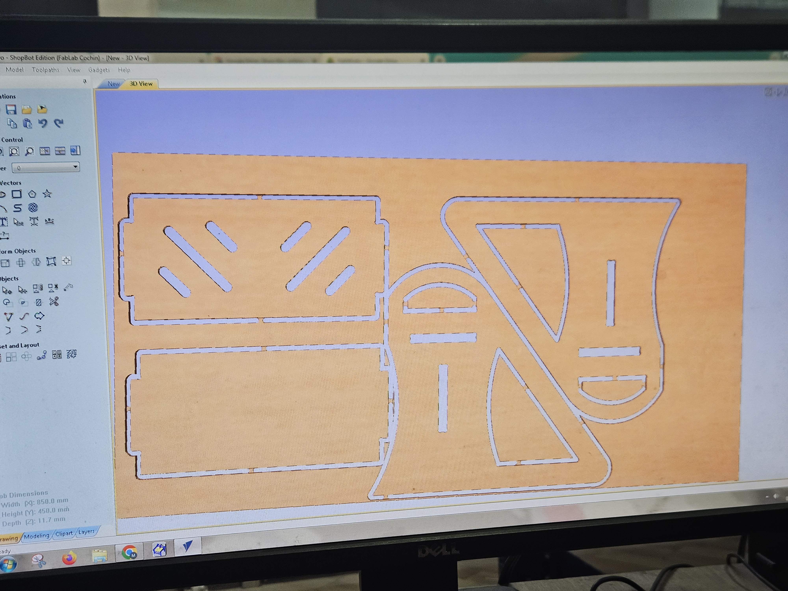
Generating the Toolpath
After calculating the toolpath, the 3D preview showed the final expected output. The toolpaths were exported as ShopBot Part Files (.SBP).
Ready to turn on the machine and mill now.
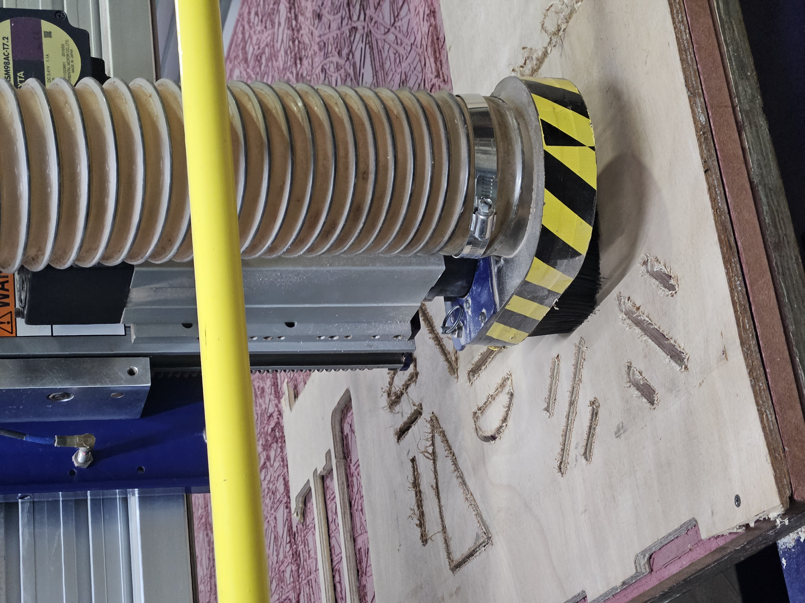
Milling with ShopBot CNC
The job was run using the ShopBot command console. The tool displays the X, Y, and Z axis positions in real time and allows full control of the CNC operation.
Before starting, the origin (zero position) of the machine must be set — the existing values belong to a previous job and need to be reset for the plywood being used.
Setting X and Y to zero — Move the tool to the desired start corner of the plywood using the arrow keys in the console, then zero the X and Y axes from the console menu.
Setting Z to zero — ShopBot uses an automatic Z-zeroing plate: place the plate under the bit, run the Z-zero routine, and the machine sets the surface height automatically.
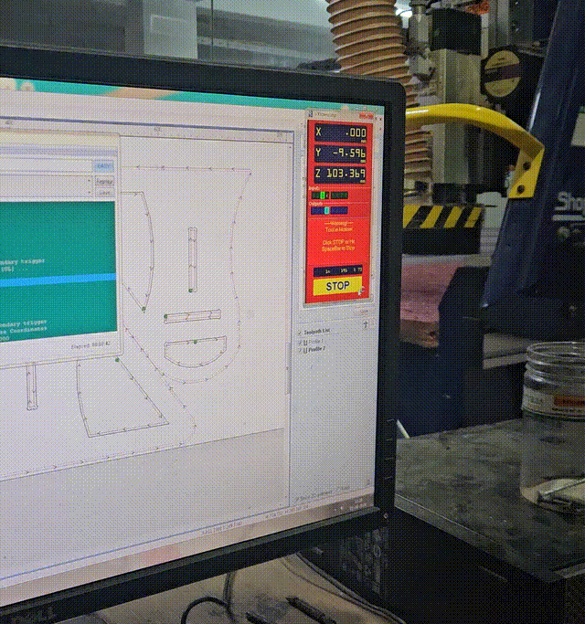
Milling in Progress
The green button starts the cutting process. The spindle was turned on, followed by turning on the vacuum system for milling dust. The spindle controller displays a digital readout indicating that the spindle is active.
Remain in the room and monitor the machine continuously for any issues, such as tool breakage, loose parts, or unexpected movements.
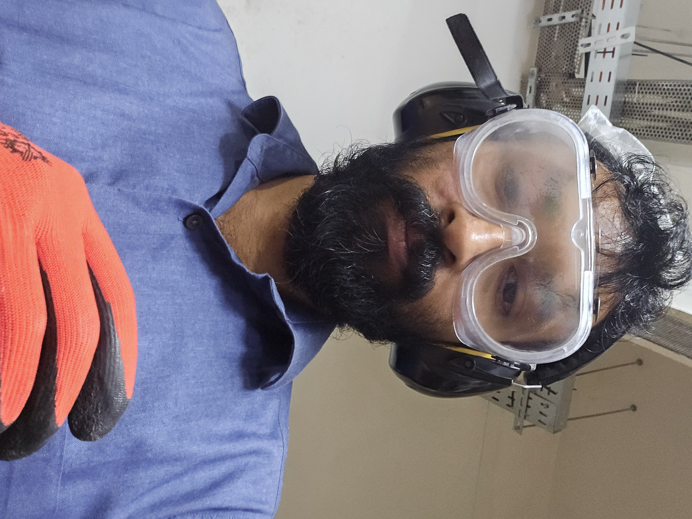
Safety Gear
CNC milling generates fine wood dust and loud noise, so proper protective equipment is essential. Ear muffs are critical — prolonged exposure to the loud noise of the spindle and vacuum system can cause permanent hearing damage over time. Safety goggles protect the eyes from flying debris, gloves protect the hands when handling freshly cut pieces with sharp edges, and an apron keeps clothing clear of dust and splinters.
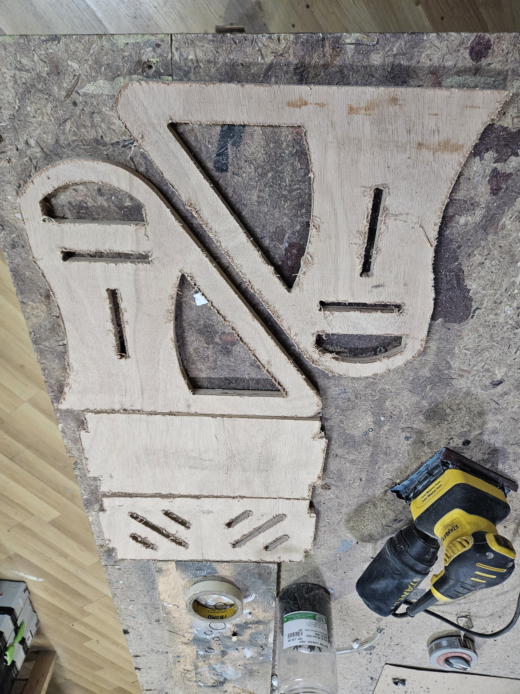
Post Processing
Holding tabs which held together larger pieces were broken with a chisel and rubber mallet and smoothened with a file.
The edges and surfaces were then sanded using a reciprocating sander to improve the finish and remove machining marks.
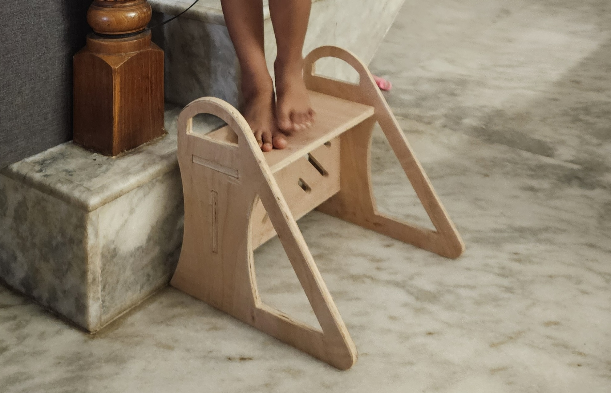
Assembling and Finishing
The milled parts were pressed together by hand. The chamfers on the edges made it easy to guide pieces into their slots and seat them firmly without forcing.
For finishing, wood sanding sealer was applied first to raise the grain and seal the surface, followed by PU (polyurethane) varnish. This combination protects the wood from moisture and gives it a smooth, durable finish.